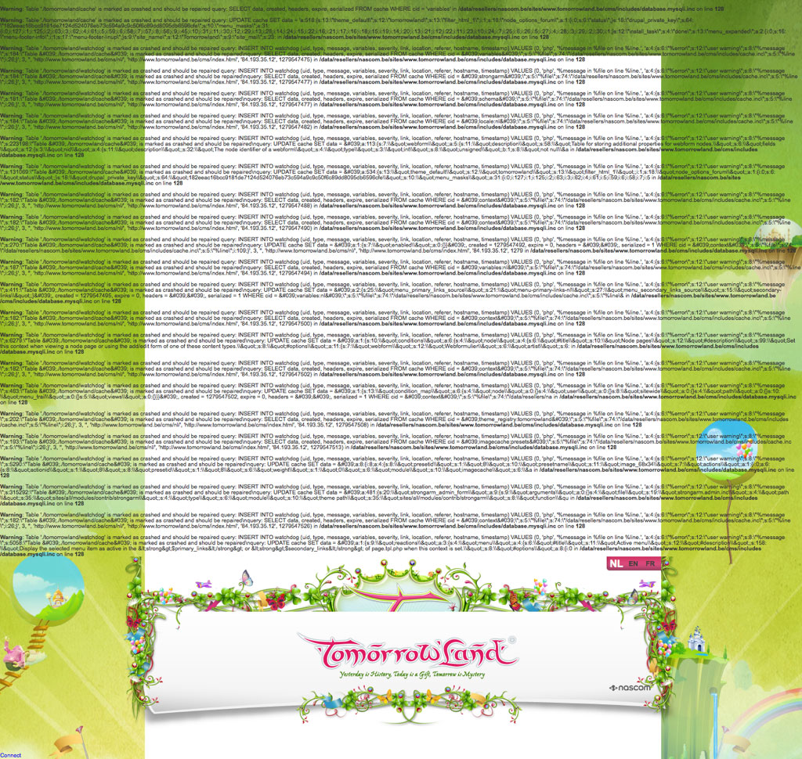

The config is used throughout the next code examples
Edit the file if needed (location: /assets/07/examples)
SQL Dumps of the used databases also in that folder
Connecting (1)
Connect by creating a new instance of PDO with params:
A DSN, containing the database host, schema, and charset
The username to use when connecting to the DBMS
The password to use when connecting to the DBMS
<?php
require_once 'config.php';
$db = new PDO('mysql:host=' . DB_HOST .';dbname=' . DB_NAME_FF . ';charset=utf8mb4', DB_USER, DB_PASS);
echo 'Connected to the database';
//EOF
Disconnecting?
Not needed
When the script has finished, the variable dies with it
Catching Errors
Let's break things
PHP will tell you if something went wrong
<?php
// Include config
require_once 'config.php';
// Make Connection
$db = new PDO('mysql:host=' . DB_HOST .';dbname=does_not_exist;charset=utf8mb4', DB_USER, DB_PASS);
echo 'Connected to the database';
// ... your query magic here
Fatal error: Uncaught exception 'PDOException' with message 'SQLSTATE[42000] [1049] Unknown database 'does_not_exist'' in /Users/bramus/Dropbox/Kaho/.../assets/07/examples/02.php:7 Stack trace: #0 /Users/bramus/Dropbox/Kaho/.../assets/07/examples/02.php(7): PDO->__construct('mysql:host=loca...', 'root', 'Azerty123') #1 {main} thrown in /Users/bramus/Dropbox/Kaho/Lesactiviteiten/WS1 - Serverside/2013-2014/slidedeck/assets/07/examples/02.php on line 7
Don't show errors on screen!
Showing errors on screen is a huge security issue!
Users can get a glimpse of your DB credentials
Users can get a glimpse of your DB layout
Users know the physical location of your website
Example: Tomorrowland website
Catching Errors
An exception will be thrown when PDO cannot connect to the database server or access database.
→ Use a try/catch struct
try {
$db = new PDO('mysql:host=' . DB_HOST .';dbname=does_not_exist;charset=utf8mb4', DB_USER, DB_PASS);
} catch (Exception $e) {
exit('Could not connect to database server or access database');
}
Safer, as we don't expose our DB credentials to potential hackers anymore
“SQL injection is the most pernicious vulnerability in human computer history” (source)
Let's take a closer look on the next few slides …
(Insecure) Example
Detailpage of a collection. Url: detail.php?id=X
<?php
…
// Get ID from URL
$id = isset($_GET['id']) ? $_GET['id'] : 0;
// Get collection from database
$stmt = $db->query('SELECT * FROM collections WHERE id = ' . $id);
// Handle result
…
Problem #1
Changing the URL param to a string will break the query
When visiting detail.php?id=test the query will become broken: SELECT * FROM collections WHERE id = test is an invalid query
Fix: add quotes in your query around the value
SELECT * FROM products WHERE id = "test" is a valid query
$stmt = $db->query('SELECT * FROM collections WHERE user_id = "' . $id . '"');
Problem #2
Changing the URL param to a string containing a quote breaks the query
When visiting detail.php?id=te"st the query will become broken: SELECT * FROM products WHERE id = "te"st" is an invalid query
Possible fix: use addslashes()
SELECT * FROM products WHERE id = "te\"st" is a valid query
$stmt = $db->query('SELECT * FROM collections WHERE user_id = "' . addslashes($id) . '"');
Possible fix: cast $id to an integer
$stmt = $db->query('SELECT * FROM collections WHERE id = ' . (int) $id);
Won't work if you expect a string though!
Problem #2 (variant)
Changing the URL param to a dangerous string that resembles SQL results in SQL injection
Multibyte characters used with certain DB encodings break stuff:
PHP's addslashes() does not recognize the multibyte char 0xbf27 (뼧) and treats it as two single bytes: 0xBF (¿) and 0x27 (') → PHP will escape that 0x27 with a backslash (0x5c) and we end up with the char sequence 0xbf5c27
MySQL with a GBK charset connection recognizes 0xbf5c (뽜) as a multibyte char, leaving an unescaped 0x27 in the query (!) → Boom, you've just injected a single quote.
What now?
Sanitize the parameters using the MySQL connection
As said before: depending on the type of query, we'll need to do some more things to get an actual result we can use
Fetching an entire resultset
Use PDOStatement::fetchAll()⚑ to fetch the entire resultset into an array
Pass in a fetch style to shape the contents of that array
$stmt =$db->prepare('SELECT * FROM collections WHERE user_id = ? OR name = ?');
$stmt->execute(array(2, 'russia'));
$collections = $stmt->fetchAll(PDO::FETCH_ASSOC);
echo '<pre>';
var_dump($collections);
echo '</pre>';
$collections = $stmt->fetchAll(PDO::FETCH_OBJ);
Fetching a single row
Use PDOStatement::fetch()⚑ to fetch the returned rows one bye one
$stmt =$db->prepare('SELECT * FROM collections WHERE user_id = ? OR name = ?');
$stmt->execute(array(2, 'russia'));
while ($collection = $stmt->fetch(PDO::FETCH_ASSOC)) {
var_dump($collection);
}
Use case: queries that yield one row
$stmt = $db->prepare('SELECT * FROM collections WHERE id = ?');
$stmt->execute(array(1));
$collection = $stmt->fetch(PDO::FETCH_ASSOC);
var_dump($collection);
Fetching a single field
Use PDOStatement::fetchColumn()⚑ to fetch the value of a column from the first row
$stmt = $db->prepare('SELECT name, user_id FROM collections WHERE id = ?');
$stmt->execute(array(1));
var_dump($stmt->fetchColumn());
Use an index to define which column you want
$stmt = $db->prepare('SELECT name, user_id FROM collections WHERE id = ?');
$stmt->execute(array(1));
var_dump($stmt->fetchColumn(1));
Fetching meta information
Use PDO::lastInsertId()⚑ to know the last inserted id (AUTO_INCREMENT) after executing an INSERT query
$stmt = $db->prepare('INSERT INTO collections(name, user_id) VALUES (?,?)');
$stmt->execute(array('Trip to Amsterdam', 10));
echo 'Created album with ID ' . $db->lastInsertId();
Use PDOStatement::rowCount()⚑ to know the number of affected rows made by UPDATE and DELETE queries
$stmt = $db->prepare('DELETE FROM collections WHERE user_id = ?');
$stmt->execute(array(10));
echo 'Deleted ' . $stmt->rowCount() . ' rows';
Note: matched rows which aren't updated are not included in this count!
Best Practices
Best Practices?
A set of often used methods / tips to help you working with databases
UTF-8
Working with dates and time
Joins over loops
Passwords
Best Practice #1
UTF-8
UTF-8
In short: Use UTF-8, everywhere.
DB Schema and Tables
DB Connection
HTML charset
If you omit one of them, it will not work as expected.
UTF-8, everywhere
DB Schema and Tables: use utf8mb4/utf8mb4_unicode_ci
CREATE DATABASE `mydb`
DEFAULT CHARACTER SET utf8mb4 DEFAULT COLLATE utf8mb4_unicode_ci;
CREATE TABLE IF NOT EXISTS `records` (
`id` INT(10) NOT NULL AUTO_INCREMENT,
`name` VARCHAR(255) NOT NULL,
PRIMARY KEY (`id`)
) ENGINE = InnoDB
DEFAULT CHARACTER SET utf8mb4 DEFAULT COLLATE utf8mb4_unicode_ci;